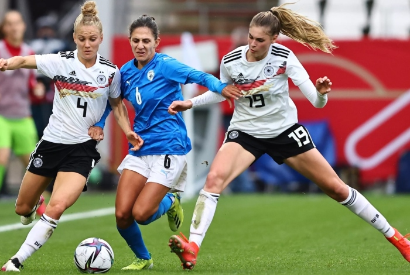

FIFA FEMENINO
El objetivo 8 de los Objetivos Estratégicos para el Fútbol Mundial: 2023-2027 del presidente de la FIFA, Gianni Infantino, buscaba realizar la mejor Copa Mundial Femenina de la FIFA™ de la historia en 2023, para impulsar aún más el desarrollo del fútbol femenino, y el torneo en Australia y Aotearoa Nueva Zelanda superó todas las expectativas.

Primeros Mundiales Femeninos
En 1970, se organizó el primer partido internacional de fútbol femenino en Italia, a donde acudieron selecciones representantes de varios países por invitación. Las primeras competiciones internacional no contaban con el reconocimiento de la FIFA, de modo que se celebraron extraoficialmente. El primer mundial femenino de 1970 fue ganado por Dinamarca, que se impuso por 2-0 al seleccionado de Italia. En el segundo mundial, celebrado en México en 1971, el equipo mexicano se impuso a las selecciones de Argentina, Inglaterra e Italia y se enfrentó en la final a Dinamarca. El encuentro se llevó a cabo en Ciudad de México ante un récord de asistencia para un encuentro de fútbol femenino, que hasta la fecha no se ha superado en ese país.El resultado final fue de 3-0 a favor de Dinamarca. Desde ese campeonato se festeja en Argentina el Día de las Futbolistas cada 21 de agosto, en recuerdo de la victoria de su selección frente a Inglaterra por.Los 4 goles fueron convertidos por Elba Selva